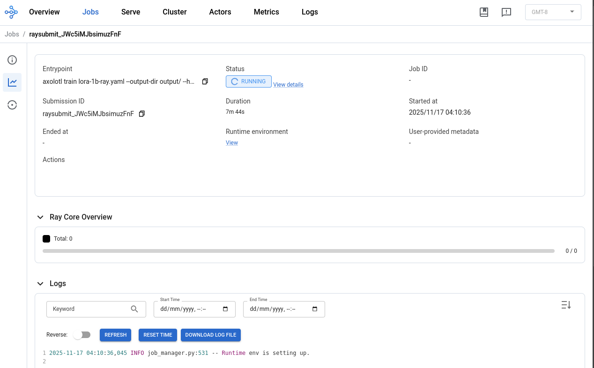

Beta access only. Register your interest here
Fine tune models with Axolotl and Ray
Axolotl is popular A Free and Open Source LLM Fine-tuning Framework that supports distributed, multi-node, multi-GPU training. It supports running on Ray resources, which means it can easily be run on Kalavai Ray clusters too.
For more information on Axolotl, check out their awesome documentation.
In this guide we show how easy it is to run Axolotl training runs at any scale to help customise LLMs to your needs. You'll be training a lora adaptor for the model NousResearch/Llama-3.2-1B, and upload it to your HuggingFace account. You'll need at least 8 GB of vRAM for this job.
Pre-requisites
First, you'll need to create a Ray cluster to run the Axolotl training run on. Check out our guide on how to set up a Ray cluster.
Once you have an active Ray cluster, make a note of the Dashboard endpoint as we'll use that to deploy our training jobs. In this guide I'll use the following dashboard address, but you should use the one available in your cluster:
Dashboard address: `http://127.0.0.1:8265`
In your local machine, install ray to match your cluster ray version. Include [default] for Ray Jobs.
pip install ray[default]==2.49.0
Now you are ready to submit an Axolotl job to your cluster.
Submit your job
Place the axolotl config in your local machine, in a subfolder assets/, and submit a Ray job in either of the three accepted interfaces below (Ray CLI, python SDK or HTTP requests). Note that the example config provided sets the resources to be used by Ray, i.e. 1 node with 1 GPU:
# Ray parameters
use_ray: true
ray_num_workers: 1
resources_per_worker:
GPU: 1
For this example, you'll need at least 8 GB of vRAM for this job.
1. Ray job CLI
Set your own HuggingFace token, HF organisation and model name. These details are used to download pretrained weights and to correctly authenticate your account to upload trained weights.
export RAY_DASHBOARD_URL="http://51.159.173.70:30570"
export HF_TOKEN="your token"
export HUB_MODEL_ID=organisation/model_name
With those values set, you can submit your job via the CLI:
ray job submit --address $RAY_DASHBOARD_URL --entrypoint-num-cpus 1 --working-dir assets/ --runtime-env-json='{"env_vars": {"HF_TOKEN": "'$HF_TOKEN'", "HUB_MODEL_ID": "'$HUB_MODEL_ID'"}, "pip": ["torch==2.6.0", "axolotl"], "config": {"setup_timeout_seconds": 1800}}' -- axolotl train lora-1b-ray.yaml --output-dir output/ --hub-model-id $HUB_MODEL_ID
Ensure you set the flat --entrypoint-num-cpus 1 so the job is ran on an active Ray worker.
2. Python API
You can also use the python SDK to connect to your cluster.
# Filename: run.py
from ray.job_submission import JobSubmissionClient
# Replace with your own values
RAY_DASHBOARD_URL="http://127.0.0.1:8265"
HF_TOKEN="your token"
HUB_MODEL_ID="org/model"
client = JobSubmissionClient(RAY_DASHBOARD_URL)
job_id = client.submit_job(
entrypoint="axolotl train lora-1b-ray.yaml --output-dir output/ --hub_model_id $HUB_MODEL_ID",
submission_id="my_training_1",
runtime_env={
"working_dir": "assets/",
"env_vars": {"HF_TOKEN": HF_TOKEN, "HUB_MODEL_ID": HUB_MODEL_ID},
"config": {"setup_timeout_seconds": 1800},
"pip": ["torch==2.6.0", "axolotl"]
},
entrypoint_num_cpus=1 # ensure this is on so the workload is assigned to active Ray workers
)
print(job_id)
Then run:
python run.py
3. HTTP request
Or use the REST API: https://docs.ray.io/en/latest/cluster/running-applications/job-submission/rest.html
Monitor progress
Once the job is running, you can access the Ray dashboard in the browser to check the progress of the fine tunning process. Note that it may take a few minutes to create the runtime environment, particularly if you have heavy dependencies.

Once the job completes, the model weights are uploaded to your HuggingFace account:

Stop a job
Get the submission ID of the job you want to stop / delete from the dashboard, or running the CLI:
ray job list --address=$RAY_DASHBOARD_URL
Then:
ray job stop --address=$RAY_DASHBOARD_URL <submission_id>
FAQs
Handling extra python dependencies
If your training run requires further libraries to be installed, you can list them as the pip parameter of your job submission, for example, we can add the requests library:
job_id = client.submit_job(
entrypoint="...",
submission_id="my_training_1",
runtime_env={
...
"pip": ["torch==2.6.0", "axolotl", "requests"] # add as many as you need!
},
...
)
Failed to build environment. Timeout
Use a large value for setup_timeout_seconds for large environments.
ImportError: FlashAttention2 has been toggled on, but it cannot be used due to the following error: the package flash_attn seems to be not installed. Please refer to the documentation of https://huggingface.co/docs/transformers/perf_infer_gpu_one#flashattention-2 to install Flash Attention 2.
If using flash attention (flash_attention: true in your axolotl config yaml), make sure you install FlashAttention dependencies in your environment:
# flash-attention dependencies
pip install packaging ninja wheel
pip install torch==2.6.0
pip install flash-attn
pip install axolotl[flash-attn]
import flash_attn_2_cuda as flash_attn_gpu ImportError: /home/carlosfm/kalavai/kube-watcher/templates/axolotl/env/lib/python3.12/site-packages/flash_attn_2_cuda.cpython-312-x86_64-linux-gnu.so: undefined symbol
Known issue, try to downgrade flash attention to <2.8.0 version:
pip install "flash-attn<2.8.0"
403 Forbidden: You don't have the rights to create a model under the namespace "
Make sure you are setting the HuggingFace token as environment variable for your Ray job, and that the token has write permissions on your username space.
export HF_TOKEN=hf_xxxxxxxxxxxxxxxxxxx
ray job submit --runtime-env-json='{"env_vars": {"HF_TOKEN": "'$HF_TOKEN'"}}' -- <entrypoint comand>
torch.OutOfMemoryError: CUDA out of memory. Tried to allocate 1.96 GiB. GPU 0 has a total capacity of 3.71 GiB of which 1.04 GiB is free. Including non-PyTorch memory, this process has 2.65 GiB memory in use. Of the allocated memory 2.46 GiB is allocated by PyTorch, and 77.64 MiB is reserved by PyTorch but unallocated.
This message suggests your cluster does not have enough vRAM memory to run the training job. Try increasing the resources available in your cluster and run again.